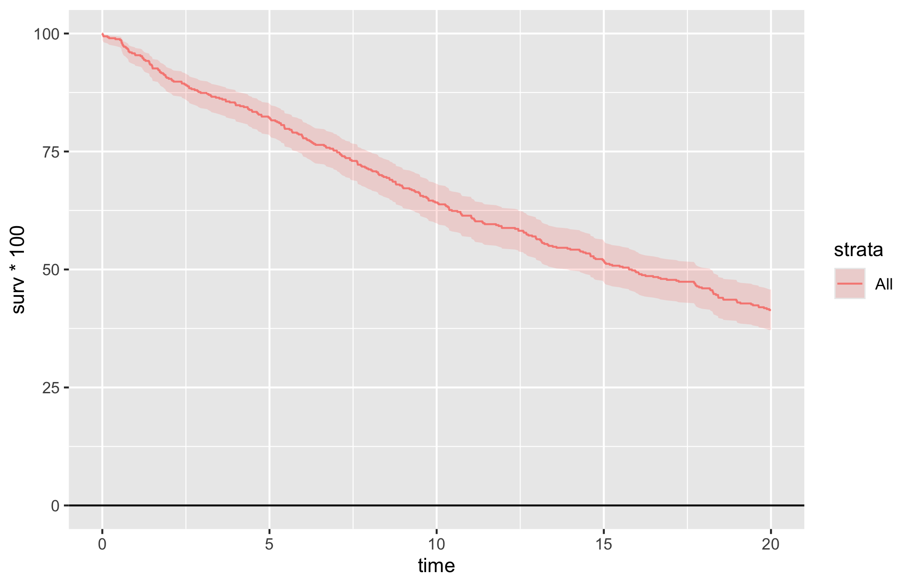
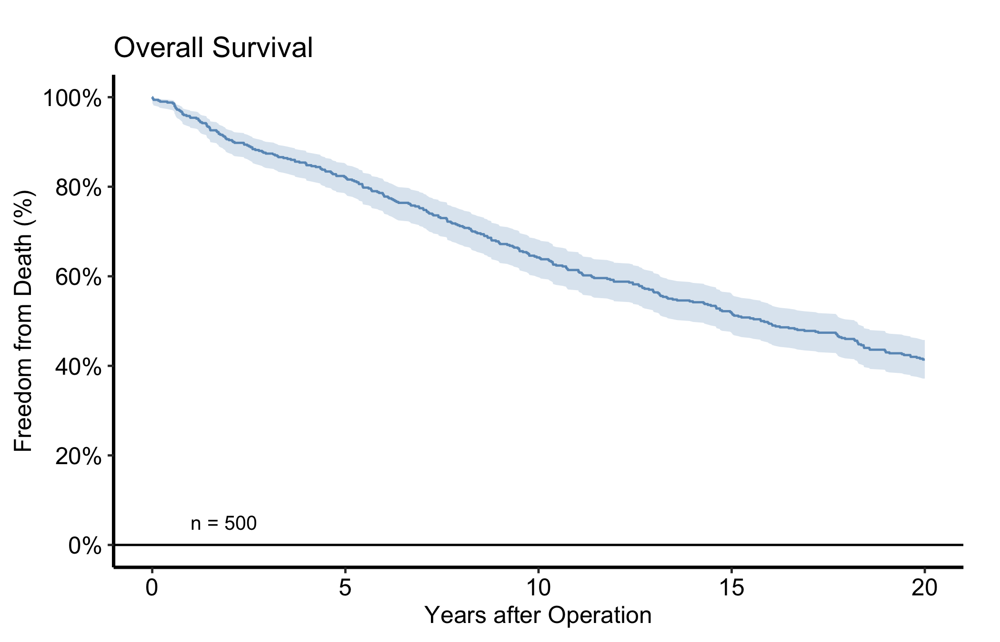
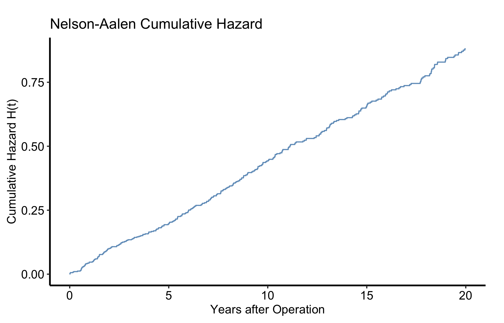
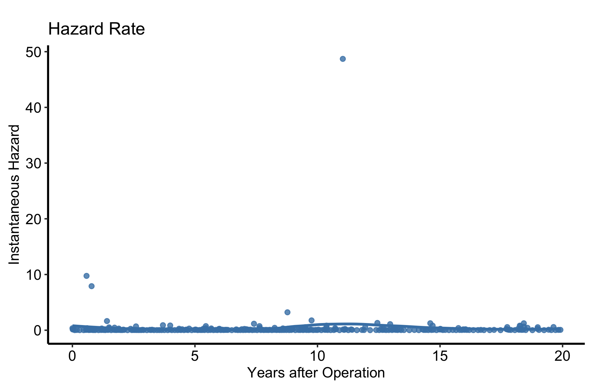
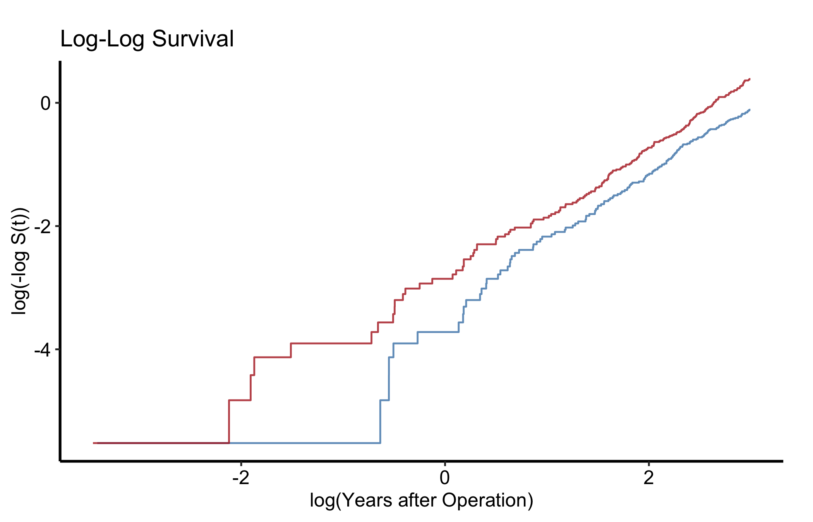
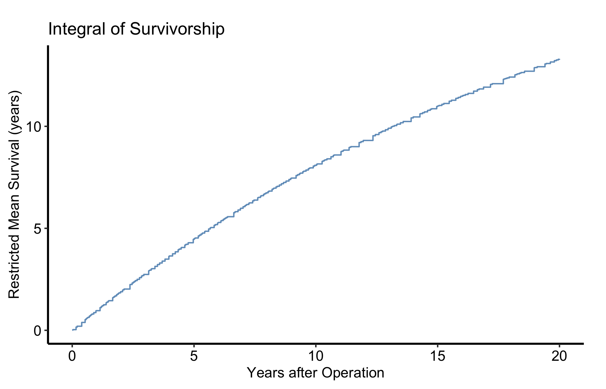

The Kaplan-Meier curve is the workhorse of every CORR outcomes paper. Reach for it whenever the question is how long until an event and some patients have not had the event yet by the end of follow-up: death, reoperation, readmission. That last part is what makes survival analysis its own method: a patient who is alive at last contact is right-censored, not a non-event, and the product-limit estimator is what lets those partial observations still count.
hv_survival()(Ehrlinger 2026), built on the survival package (Therneau 2026), estimates the product-limit survival function once and stores everything five related panels need (the survival curve, cumulative hazard, hazard rate, log-log check, and integrated survivorship), plus tidy summary tables in $tables. If you have used the SAS %kaplan macro, these are the same five plots it draws. You build the S3 object once and call plot() with a type argument to pull out the panel you want; each one comes back as a bare ggplot you finish with the usual +.
9.2 The data it needs
hv_survival() expects long-format data: one row per patient with a follow-up time and an event indicator (1 = event, 0 = censored). Nothing else is required for an unstratified curve; add a grouping column when you want curves per arm. sample_survival_data() builds a simulated right-censored cohort in exactly this shape, so the recipe runs end to end before you point it at your own data.
# Build the S3 object once; reuse it across every panel below.km <-hv_survival(dta_km)
9.3 Build it
Start from the bare panel so you can see what the constructor produced before any styling. The default type = "survival" is the curve with a logit-transform 95% confidence ribbon.
plot(km)

Then layer on the house style. The pattern below is the one we use most often in CORR: a single steelblue for a one-cohort figure, percent labels on the y-axis, an n = callout in the lower-left, and the manuscript theme. Swap in theme_hv_poster() when you want the larger, poster-sized text.
plot(km, alpha =0.8) +scale_color_manual(values =c(All ="steelblue"), guide ="none") +scale_fill_manual(values =c(All ="steelblue"), guide ="none") +scale_y_continuous(breaks =seq(0, 100, 20),labels =function(x) paste0(x, "%")) +scale_x_continuous(breaks =seq(0, 20, 5)) +coord_cartesian(xlim =c(0, 20), ylim =c(0, 100)) +labs(x ="Years after Operation", y ="Freedom from Death (%)",title ="Overall Survival") +annotate("text", x =1, y =5, label =paste0("n = ", nrow(dta_km)),hjust =0, size =3.5) +theme_hv_manuscript()

Figure 9.1: Kaplan-Meier overall survival for the simulated cohort, styled in the CORR house style with a logit-transform 95% confidence ribbon
9.4 Read it
A Kaplan-Meier curve starts at 100% and steps downward at each event time; it never rises. A few things to look at:
The ribbon widens to the right. As the at-risk population thins, each remaining event moves the estimate more, so the confidence band fans out. Be cautious reading the far-right tail, which may rest on a handful of patients.
Median survival is where the curve crosses 50%. If it never crosses, the median is not reached within follow-up and you report a different landmark (e.g. 5-year survival) instead.
The numbers at risk below the figure tell the reader how much data backs each region of the curve. Always show them.
The at-risk strip and the per-time-point report (point estimates with CIs) are stored on the object, so you never recompute them:
km$tables$risk
strata report_time n.risk
1 All 1 478
2 All 5 412
3 All 10 322
4 All 15 260
5 All 20 207
6 All 25 207
km$tables$report
strata report_time surv lower upper n.risk n.event
1 All 1 0.954 0.9317320 0.9692443 478 1
2 All 5 0.822 0.7859710 0.8530976 412 1
3 All 10 0.642 0.5989814 0.6828473 322 1
4 All 15 0.518 0.4741762 0.5615486 260 1
5 All 20 0.414 0.3715880 0.4577269 207 0
6 All 25 0.414 0.3715880 0.4577269 207 0
9.5 Numbers at risk
The “always show them” advice has a one-call answer. hv_atrisk() turns the object’s risk table into an aligned panel, and hv_atrisk_compose() stacks it under the curve, matching the table’s x-range to the plot’s so the counts sit beneath the time points they describe. Style the curve as usual, build the table from the same object, and compose the two.
Figure 9.2: Survival curve with an aligned numbers-at-risk table composed beneath the time axis
The counts under the axis are the same km$tables$risk numbers from above, now positioned at the curve’s own time ticks. A stratified figure gives the table one row per group, labelled to match the curves.
9.6 Variations
9.6.1 Stratified by group
To compare arms, pass group_col and the constructor fits a separate curve per stratum. Here we simulate a two-arm valve-type cohort with a 1.4x hazard ratio. Look for clearly separated curves whose CI ribbons stop overlapping in the windows where the treatment difference matters.
Figure 9.3: Stratified survival curves for a two-arm valve-type cohort simulated with a 1.4x hazard ratio
9.6.2 Cumulative hazard
type = "cumhaz" gives the Nelson-Aalen cumulative hazard H(t) = -log S(t), a monotonically non-decreasing curve whose slope at any point is the instantaneous hazard rate. Same object, different type.
plot(km, type ="cumhaz") +scale_x_continuous(breaks =seq(0, 20, 5)) +labs(x ="Years after Operation", y ="Cumulative Hazard H(t)",title ="Nelson-Aalen Cumulative Hazard") +scale_color_manual(values =c(All ="steelblue"), guide ="none") +theme_hv_manuscript()

Figure 9.4: Nelson-Aalen cumulative hazard, the monotonically non-decreasing complement of the survival curve
9.6.3 Hazard rate
type = "hazard" is the instantaneous hazard. The raw point estimates are noisy, so for a figure overlay a LOESS smooth. The smoothed curve shows the early-risk peak and later plateau a reviewer is looking for.
plot(km, type ="hazard") +geom_smooth(aes(x = mid_time, y = hazard, color = strata),method ="loess", se =FALSE, span =0.6) +scale_color_manual(values =c(All ="steelblue"), guide ="none") +scale_x_continuous(breaks =seq(0, 20, 5)) +labs(x ="Years after Operation", y ="Instantaneous Hazard",title ="Hazard Rate") +theme_hv_manuscript()

Figure 9.5: Instantaneous hazard rate with a LOESS smooth showing the early-risk peak and later plateau
type = "loglog" plots log(-log S(t)) against log(time). Parallel lines across strata mean the proportional-hazards assumption is reasonable. Run this check before you quote a single hazard ratio. Fit with group_col so there are strata to compare.
plot(km_s, type ="loglog") +scale_color_manual(values =c("Type A"="steelblue", "Type B"="firebrick"),name ="Valve Type" ) +labs(x ="log(Years after Operation)", y ="log(-log S(t))",title ="Log-Log Survival") +theme_hv_manuscript()

Figure 9.6: Log-log survival plot for checking the proportional-hazards assumption across strata
9.6.5 Integrated life table (restricted mean survival)
type = "life" is the integrated survivorship: the area under the survival curve up to time t, equal to the restricted mean survival time (RMST) at that horizon. It rises linearly while S(t) is near 1 and bends as events accumulate. RMST is the summary to reach for when the log-log check above shows hazards are not proportional and a single hazard ratio would mislead.
plot(km, type ="life") +scale_color_manual(values =c(All ="steelblue"), guide ="none") +scale_x_continuous(breaks =seq(0, 20, 5)) +labs(x ="Years after Operation",y ="Restricted Mean Survival (years)",title ="Integral of Survivorship") +theme_hv_manuscript()

Figure 9.7: Integrated survivorship, the restricted mean survival time accumulated up to each horizon
9.7 Pitfalls
Event coding.event must be 1 for the event and 0 for censored. Flip them and you estimate freedom from being censored, which is meaningless. Check the coding before you trust the curve.
Reading the tail. The right end of the curve often rests on very few patients; the widening ribbon is the warning. Quote a landmark estimate (with its at-risk count) rather than the visual endpoint.
Non-proportional hazards. If the log-log curves cross, a single hazard ratio is the wrong summary – report RMST from the integrated panel instead.
Ehrlinger, John. 2026. hvtiPlotR: HVTI Ggplot2 Themes and Clinical Plot Functions for the Cleveland Clinic Heart & Vascular Institute. https://github.com/ehrlinger/hvtiPlotR.